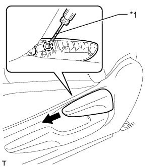
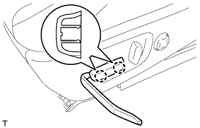
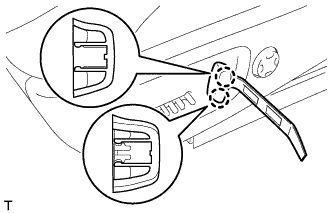
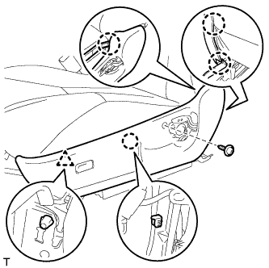
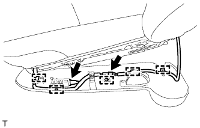
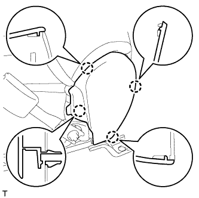
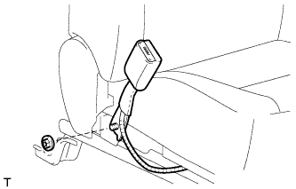
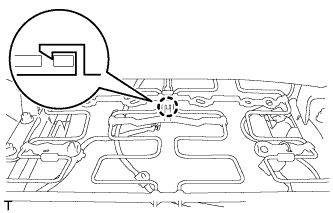
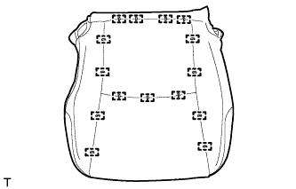

ДАТЧИК ПРИСУТСТВИЯ ПАССАЖИРА > СНЯТИЕ |
| 1. СНИМИТЕ ПРАВОЕ ПЕРЕДНЕЕ СИДЕНЬЕ В СБОРЕ |
Для сиденья с ручным приводом:
Снимите правое переднее сиденье (Нажмите здесь).
Для сидений с электроприводом:
Снимите правое переднее сиденье (Нажмите здесь).
| 2. СНИМИТЕ РУЧКУ ОТПУСКАНИЯ РЕГУЛЯТОРА НАКЛОНА ПРАВОГО СИДЕНЬЯ (для сидений с ручным приводом) |
|  |
Поднимите ручку отпускания регулятора угла наклона, чтобы открыть захват. С помощью отвертки освободите захват и снимите ручку.
| *1 | Защитная клейкая лента |
| 3. СНИМИТЕ РУЧКУ ПЕРЕКЛЮЧАТЕЛЯ ЭЛЕКТРОПРИВОДА ПЕРЕМЕЩЕНИЯ СИДЕНЬЯ ПО НАПРАВЛЯЮЩИМ И ПО ВЕРТИКАЛИ (для сиденья с электроприводом) |
|  |
С помощью съемника молдингов отцепите 2 захвата и снимите ручку.
| 4. СНИМИТЕ РУЧКУ ПЕРЕКЛЮЧАТЕЛЯ ЭЛЕКТРОПРИВОДА НАКЛОНА СИДЕНЬЯ (для сиденья с электроприводом) |
|  |
С помощью съемника молдингов отцепите 2 захвата и снимите ручку.
| 5. СНИМИТЕ ЗАЩИТНЫЙ ЩИТОК ПОДУШКИ ПРАВОГО ПЕРЕДНЕГО СИДЕНЬЯ (для сидений с ручным приводом) |
|  |
Выверните винт.
С помощью съемника молдингов освободите 4 захвата и фиксатор и снимите защитный щиток подушки.
|  |
Со стороны водителя:
Открепите 5 зажимов жгута проводов и отсоедините 2 разъема.
| 6. СНИМИТЕ ЗАЩИТНЫЙ ЩИТОК ПОДУШКИ ПРАВОГО ПЕРЕДНЕГО СИДЕНЬЯ (для сидений с электроприводом) |
Выверните винт.
С помощью съемника молдингов освободите 4 захвата и фиксатор и снимите защитный щиток подушки.
Со стороны водителя:
Открепите 5 зажимов жгута проводов и отсоедините 2 разъема.
| 7. СНИМИТЕ ВНУТРЕННИЙ ЗАЩИТНЫЙ ЩИТОК ПОДУШКИ ПРАВОГО ПЕРЕДНЕГО СИДЕНЬЯ |
|  |
С помощью съемника молдингов освободите 4 захвата и снимите защитный щиток подушки.
| 8. СНИМИТЕ ЗАМОК РЕМНЯ БЕЗОПАСНОСТИ ПРАВОГО ПЕРЕДНЕГО СИДЕНЬЯ В СБОРЕ |
Со стороны водителя:
Отсоедините разъем и освободите 4 зажима.
Со стороны переднего пассажира:
Отсоедините 2 разъема и освободите 3 зажима.
|  |
Отверните гайку и снимите замок ремня безопасности переднего сиденья.
| 9. СНИМИТЕ ОБИВКУ ПОДУШКИ СИДЕНЬЯ ВМЕСТЕ С ПОДУШКОЙ |
 |
Для моделей с системой подогрева сидений:
Отсоедините разъем подогревателя сиденья и открепите 3 зажима жгута проводов.
Отсоедините крепления.
|  |
Со стороны переднего пассажира:
Освободите захват и отсоедините разъем.
Снимите обивку подушки сиденья вместе с подушкой.
| 10. СНИМИТЕ ОБИВКУ ПОДУШКИ РАЗДЕЛЬНОГО ПЕРЕДНЕГО СИДЕНЬЯ |
|  |
Снимите витковые пружины и обивку подушки сиденья с подушки сиденья.